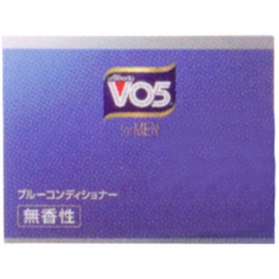

返回列表
产品名称：ＶＯ５ ｆｏｒ ＭＥＮ ブルーコンディショナー 無香性

サンスター ＶＯ５ ｆｏｒ ＭＥＮ ブルーコンディショナー 無香性 ８５ｇ
メーカー サンスター
JANコード 4901616307858
商品の特徴
無香料
- 成分・分量
- ミネラルオイル、ワセリン、ラノリン、ジラウリン酸ＰＥＧ‐８、パラフィン、パルミチン酸イソプロピル、ラネス‐５、セレシン、ＰＣＡイソステアリン酸グリセレス‐２５、褐藻エキス、ラベンダー油、水、ＢＨＴ、紫２０１、緑２０２、香料
- 用法及び用量
- ■適量を手に取り、手のひらで伸ばしてから髪に塗布し整髪します。